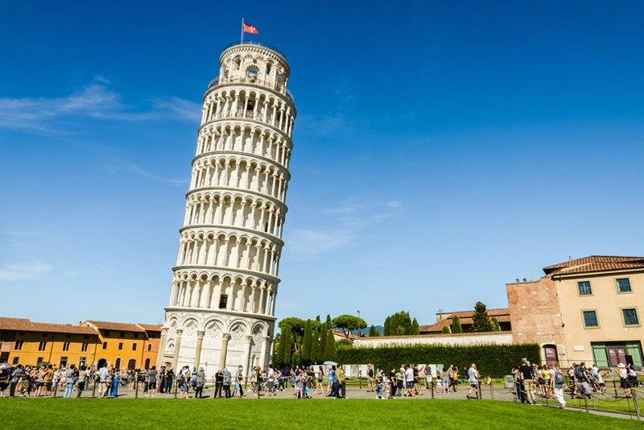
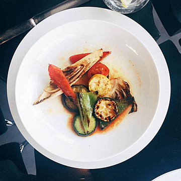
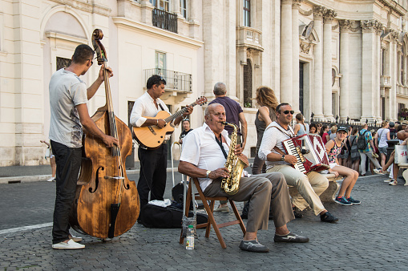

Fica inteiramente no Hemisfério Norte, a oeste da Ásia e ao norte da África. Possui cerca de 10,18 milhões a 10,5 milhões de km², sendo o segundo menor continente do mundo (à frente apenas da Oceania).

A identidade europeia se construiu no contraste entre o berço de sangrentos conflitos históricos e o atual pilar dos Direitos Humanos, distanciando-se do Oriente por suas próprias revoluções, crenças e economias.

